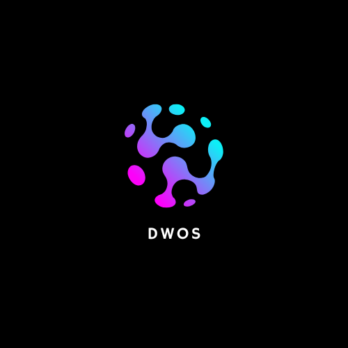
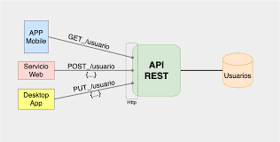
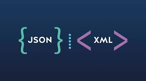

Bienvenido al Desarrollo Web Orientado a Servicios
¿Qué es el Desarrollo Web Orientado a Servicios?
Descripción:
El Desarrollo Web Orientado a Servicios (DWOS) es un enfoque de desarrollo de software en el que las aplicaciones web se construyen a partir de servicios independientes y reutilizables, diseñados para comunicarse entre sí a través de la red mediante protocolos estándar como HTTP/HTTPS y formatos de intercambio de datos como JSON o XML. En este modelo, cada servicio representa una funcionalidad específica del sistema (por ejemplo, gestión de usuarios, autenticación, productos o pagos) y funciona de manera autónoma, lo que permite que diferentes aplicaciones —como sitios web, aplicaciones móviles o sistemas externos— puedan consumir esos servicios sin depender directamente de la implementación interna.
¿Para qué sirve?
Reutilizar funcionalidades
Los servicios pueden integrarse en distintas aplicaciones sin necesidad de reescribir código, lo que reduce tiempos de desarrollo, evita errores repetidos y mejora la productividad del equipo.
Tener escalabilidad
Cada servicio puede crecer o reducirse de forma independiente según la demanda, permitiendo un mejor aprovechamiento de los recursos y un rendimiento óptimo del sistema.
Mejorar el mantenimiento
Las actualizaciones o mejoras en un servicio no afectan al resto del sistema, facilitando la corrección de errores, la evolución del software y la incorporación de nuevas funciones.
Operabilidad
Los servicios pueden comunicarse entre sí aunque estén desarrollados en diferentes lenguajes o plataformas, gracias al uso de estándares web como HTTP, JSON y APIs REST.
Conceptos Clave
Servicios Web
Un servicio web es una aplicación o componente de software que permite la comunicación y el intercambio de datos entre diferentes sistemas o dispositivos a través de Internet, utilizando protocolos y estándares como HTTP, XML o JSON para asegurar la interoperabilidad, incluso si están construidos con tecnologías distintas.

API
Una API (Interfaz de Programación de Aplicaciones) es un conjunto de reglas y protocolos que permite que diferentes aplicaciones de software se comuniquen entre sí, actuando como un intermediario para intercambiar datos y funcionalidades de forma estandarizada, sin necesidad de conocer los detalles internos de cada sistema.

REST
REST (siglas en inglés de REpresentational State Transfer o Transferencia de Estado Representacional) es un estilo de arquitectura de software para diseñar sistemas distribuidos, como los servicios web. No es un lenguaje de programación ni una tecnología específica, sino un conjunto de principios y restricciones de diseño que guían cómo deben comunicarse los componentes de un sistema a través de la web.

JSON/XML
JSON (JavaScript Object Notation) y XML (eXtensible Markup Language) son formatos de texto que se utilizan para estructurar, almacenar e intercambiar datos entre diferentes sistemas, como entre un servidor web y una aplicación; JSON es un formato de texto ligero y fácil de leer, basado en la notación de objetos de JavaScript. XML es un lenguaje de marcado extensible basado en etiquetas, similar a HTML, pero diseñado para describir datos.
